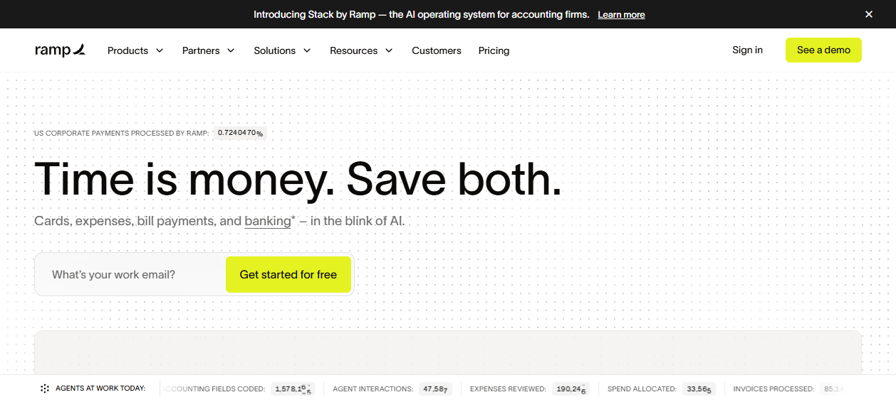
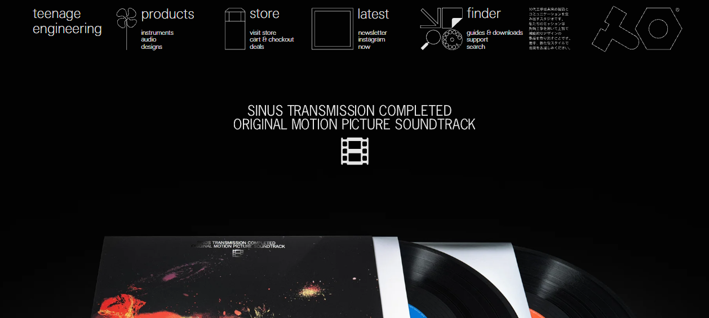

Color is a budget, not a box of crayons.
The best sites we tore down spend almost nothing on color — one disciplined accent, a deep neutral canvas, and a single saturated reward. Restraint is the technique. Here is how 80 teardowns actually do it.
1 · The one-accent thesis
If there is a single lesson across the teardowns, it is this: elite sites use one accent color, and they spend it like money. The discipline of a single hue is the brand.
Ramp ↗ is the purest case: a pure-white editorial canvas, near-black text, and exactly one color — an acid lime-green (oklch(0.92 0.20 124), roughly #CDFF00) used only on primary CTAs. No gradients, no glass, no secondary hues. Brittany Chiang ↗ runs a two-color system — slate-900 plus a single teal-300 accent that does triple duty as link-hover, tech-pill tint, and the spotlight glow color. Mercury ↗ reserves its indigo #5266EB almost entirely for the "Open account" button, so the accent literally means "convert." Linear ↗ keeps its marketing chrome effectively monochrome and lets color appear only inside product mockups — issue-priority swatches and label chips.
The accent-as-currency rule. Pick one accent. Then ask of every colored pixel: "what is this color buying me?" If the answer is "decoration," delete it. Ramp, Mercury, and Brittany Chiang all prove that one color, spent only on the thing that matters, reads as more confident than a five-color palette.

2 · The neutral canvas: dark vs light
Before the accent comes the canvas, and the canvas is almost never pure #000 or pure #fff. The teardowns split into two disciplined camps.
Dark canvases tint toward a hue
Nobody serious ships #000000 as a body background unless it is doing a specific job. Linear ↗ uses rgb(8,9,10) — a near-black that is fractionally warm. Stripe Press ↗ goes further: a deep brown-maroon rgb(32,24,25) that "feels like a dim library or leather binding," paired with a brass-gold link color. The tint gives the dark theme a temperature instead of a void.
The exceptions prove the rule. Teenage Engineering ↗ does use pure rgb(0,0,0) sitewide — deliberately — because the black turns every product photo into a spotlit studio object and supplies the accent from the products themselves (orange lamp glow, a red record button, colored vinyl). The brand restrains its own palette so product color reads as the accent. Basement Studio ↗ does the same with a lit 3D scene as the only warmth.

Light canvases warm the white
Light sites that feel premium rarely sit on cold #FFFFFF. Arc Browser ↗ bases on a butter-cream rgb(255,252,236) — "this warmth is a key differentiator from cold SaaS sites." Things ↗ uses a pale blue-gray rgb(242,245,247) for an Apple-frosted softness; Family ↗ and Lusion ↗ use warm off-white / pale-lavender shells. The handful that do commit to true white — Apple ↗, Ramp ↗, Vercel ↗ — do it for maximum gallery contrast, letting product photography carry all the color.
Pro tip — never use the absolutes for surfaces. Reserve #000 and #fff for the rare spotlight effect (TE, Apple's black hero tiles). For everyday surfaces, nudge the canvas a few points off the extreme and a few degrees toward a hue. Our own shared.css uses --bg: #0b0c0e, not black.
3 · Building a palette in OKLCH
Once you have a canvas and an accent, you need steps — surface tiers, hover states, dimmed text. The modern way to generate them is OKLCH, a perceptually-uniform color space now supported in every evergreen browser. Notably, Ramp ↗'s teardown shows its computed colors already in lab() space (lab(92.1 -20.5 84.8) for the lime) — the elite stacks have already moved past hex.
Why OKLCH beats HSL: in HSL, holding lightness fixed and rotating hue produces wildly different perceived brightness (yellow looks far lighter than blue at the same L). OKLCH fixes this — equal L means equal perceived lightness. So you can build a ramp by stepping only lightness and get visually even swatches:
:root {
/* Define the accent ONCE as hue + chroma, derive the ramp by lightness. */
--accent-h: 265; /* indigo */
--accent-c: 0.15;
--accent-900: oklch(0.22 0.05 var(--accent-h)); /* deep surface tint */
--accent-700: oklch(0.46 0.11 var(--accent-h));
--accent-500: oklch(0.62 var(--accent-c) var(--accent-h)); /* the accent */
--accent-300: oklch(0.78 0.10 var(--accent-h)); /* text-on-dark */
--accent-100: oklch(0.92 0.04 var(--accent-h)); /* faint wash */
}
/* Derive states from the SAME hue — never hand-pick a hover color. */
.btn { background: var(--accent-500); }
.btn:hover { background: oklch(from var(--accent-500) calc(l + 0.06) c h); }
.btn:active { background: oklch(from var(--accent-500) calc(l - 0.04) c h); }relative color syntax (oklch(from var(--x) calc(l + 0.06) c h)) lets you compute hover/active/disabled states from the base token. One source of truth — change the accent hue and every state follows. No more drifting "almost-the-same" hover colors scattered across a stylesheet.
4 · Contrast & WCAG, non-negotiable
WCAG 2.x sets the floor: 4.5:1 for body text, 3:1 for large text (≥24px, or ≥19px bold) and meaningful UI/graphics. The sites that nail this do it on purpose. Sara Soueidan ↗ — an accessibility specialist — keeps links black (differentiated by underline, not hue) "so color is never the sole signifier," guaranteeing AAA contrast everywhere. Obys Agency ↗ and Cuberto ↗ get AAA-grade legibility for free by going near-monochrome black-on-white.
And the cautionary tales are just as instructive. Arc Browser ↗'s cream canvas plus grey sub-copy is flagged as "the one accessibility soft spot." Gucci ↗ and Bottega Veneta ↗ show the classic luxury risk: text overlaid on campaign photography drops below threshold the moment the image behind it gets bright.
/* Guard text-over-image with a scrim — the Gucci / Bottega fix. */
.hero-caption {
position: relative;
color: #fff;
}
.hero-caption::before { /* darken just enough behind the text */
content: "";
position: absolute; inset: 0;
background: linear-gradient(0deg, rgba(0,0,0,0.55), transparent 60%);
z-index: -1;
}
/* Respect users who demand more contrast */
@media (prefers-contrast: more) {
:root { --ink-dim: #b7bcc4; --line: #3a4049; }
}Pitfall — color as the only signal. ~8% of men have a color-vision deficiency. A red "error" border that looks identical to a grey idle border to them is broken. Pair every color signal with a second channel: an icon, an underline (Sara Soueidan), a label, or a shape. WCAG 1.4.1 requires it.
5 · Accent strategy: make color mean something
The strongest accent systems assign the color a job so consistent that users learn it. Family ↗ keeps its entire UI neutral and lets the illustrations carry all the color — but green is the one functional hue that escapes the artwork, used for eyebrows and feature checkmarks ("Watch Any Wallet ✓"), signalling "go / positive / safe." Mercury ↗'s indigo only ever appears on the convert action. Stripe ↗ reserves its electric indigo #533AFD for filled buttons and links — the one interactive color on an otherwise calm page.
Contrast this with sites where color is material, not meaning: Active Theory ↗ floods a black canvas with a full prismatic particle spectrum (yellow→orange→red→blue→violet) — color is the motion, the energy field. That works because the whole brand is "luminous energy." For a portfolio or SaaS, pick the Family/Mercury model: one accent, one meaning.
6 · Gradients done right
Most teardown sites use no gradients at all — Ramp, Rauno, Sara Soueidan, Bottega, Obys all explicitly forgo them. When gradients do appear at this tier, they follow rules.
- The gradient is the brand, or it's a whisper — nothing in between. Stripe ↗ makes its diagonal orange→coral→magenta→violet→blue mesh ribbon the entire hero identity. Vercel ↗ goes the opposite way: a subtle warm-orange→cool-teal spectrum bleeding up behind the hero CTAs as fine line-art rays — "restrained, almost watermark-like, not a hero gradient wash."
- Confine loud gradients to UI surfaces, never the page. Linear ↗'s gradients are "whisper-soft and confined to UI surfaces (timeline bars fade to translucent), never loud hero gradients."
- Interpolate in OKLCH to kill the grey dead-zone. A naive sRGB gradient between two saturated hues passes through a muddy desaturated middle. The
in oklchkeyword keeps chroma up across the blend.
↑ sRGB — note the muddy desaturated middle
↑ in oklch — chroma stays high edge to edge
#533afd → #f5a623), two interpolation spaces. Modern CSS: linear-gradient(90deg in oklch, ...).
7 · Color as wayfinding & reward
Color does two interaction jobs beyond branding: it tells you where you are (wayfinding) and it pays you for acting (reward).
Wayfinding: Brittany Chiang ↗ uses her teal accent for the active-nav highlight, so the accent both decorates and orients. Cuberto ↗ and Apple ↗ flip whole sections light→dark→light as a pacing device — the theme change tells you "new chapter" before you read a word. Apple even does per-tile inversion: each marquee tile sets its own light/dark context. Stripe ↗ drops a deliberate deep-indigo "backbone of global commerce" band mid-scroll — a tonal break that re-grabs attention.
Reward: the accent's most satisfying job is the hover/press payoff. A neutral control that blooms into the accent on hover gives the click a felt reward — try it:
.btn {
background: var(--bg-3); color: var(--ink-soft);
transition: background .25s var(--ease), color .25s var(--ease), box-shadow .25s var(--ease);
}
.btn:hover {
background: var(--accent); color: var(--accent-ink);
box-shadow: 0 0 0 4px var(--accent-glow), 0 8px 30px rgba(245,166,35,.25);
}8 · Theming with CSS variables
Every multi-theme site in the set is token-driven. Josh Comeau ↗ — who literally wrote the canonical "Perfect Dark Mode" article — ships a "flicker-free, persisted, theme-token driven" dark mode. The recipe: define semantic tokens once, swap their values per theme via a data-theme attribute on the root, and let every component read the token. Vercel ↗ and Sara Soueidan ↗ both signal their theming layer through a root data-theme attribute.
data-theme on the wrapper re-points the CSS variables; nothing in the markup or component CSS changes.Semantic token layer (the right way)
/* 1. PRIMITIVE scale — raw values, never used directly in components. */
:root {
--indigo-500: oklch(0.55 0.22 270);
--slate-50: oklch(0.98 0.01 250);
--slate-950: oklch(0.16 0.02 250);
}
/* 2. SEMANTIC tokens — what components actually consume. */
:root, [data-theme="light"] {
--color-bg: var(--slate-50);
--color-ink: var(--slate-950);
--color-accent: var(--indigo-500);
color-scheme: light; /* native form controls + scrollbars follow */
}
[data-theme="dark"] {
--color-bg: var(--slate-950);
--color-ink: var(--slate-50);
--color-accent: oklch(0.72 0.16 270); /* lift the accent for dark legibility */
color-scheme: dark;
}
/* 3. Default to the OS preference, then let the toggle override. */
@media (prefers-color-scheme: dark) {
:root:not([data-theme]) { color-scheme: dark; /* ...dark semantic values... */ }
}
/* Components only ever read SEMANTIC tokens — never primitives, never hex. */
.card { background: var(--color-bg); color: var(--color-ink); }No-flash theme init (the Josh Comeau move)
The flash of wrong theme happens when React/Vue hydrates after first paint. Fix it with a tiny blocking script in <head> that sets the attribute before the body renders:
<!-- Inline in <head>, BEFORE your stylesheet/app. Runs synchronously. -->
<script>
(function () {
const saved = localStorage.getItem('theme');
const sys = matchMedia('(prefers-color-scheme: dark)').matches ? 'dark' : 'light';
document.documentElement.dataset.theme = saved || sys;
})();
</script>Pitfall — theming only the background. A dark theme is not "invert the canvas." Saturated accents that pass contrast on white often fail on black, and pure-white text on pure-black causes halation (smearing) for astigmatic readers. Lift the accent's lightness for dark mode (see the OKLCH bump above) and use off-white ink, exactly like Linear's rgb(247,248,248) rather than #fff.
9 · The steal-this checklist
Color discipline, distilled from 80 teardowns:
- One accent, spent like money — Ramp, Mercury, Brittany Chiang. Every colored pixel must buy you something.
- Tint your neutrals — never raw
#000/#ffffor everyday surfaces. Warm the cream (Arc), warm the dark (Stripe Press), or commit to true white only for gallery contrast (Apple). - Generate ramps + states in OKLCH from a single hue token using relative color syntax — no hand-picked hovers.
- 4.5:1 body / 3:1 large & UI, always, and never let color be the only signal (Sara Soueidan's underlined links).
- Give the accent a job — "convert," "go/safe," "active page" — so users learn its meaning.
- Gradients: brand-loud or watermark-quiet, never in between; interpolate
in oklch; confine loud ones to UI surfaces (Linear). - Theme with semantic tokens +
data-theme+color-scheme, lift the accent for dark, and ship a no-flash init script (Josh Comeau).